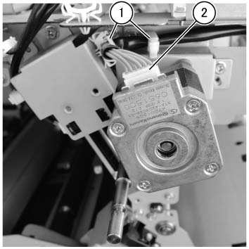
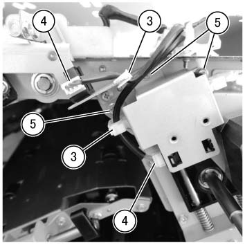
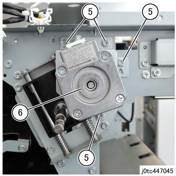
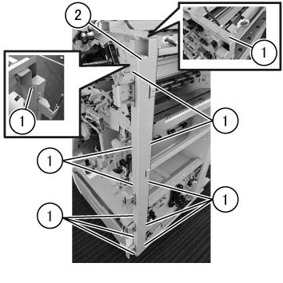
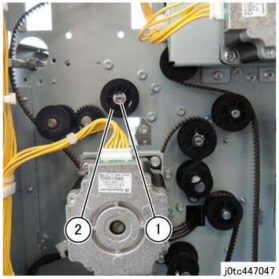
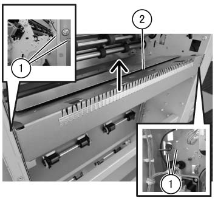

REP 47.30.1 出纸 辊 组件 
参考 PL:PL 47.30
Removal

执行IOT关机步骤. 确认电源已关闭并拔掉电源插头.
拆卸 纸张 输出 选件 连接到 the TCBM.
拆卸 前面 上方 盖板 组件.
拆卸 前面 下方 盖板 组件.
执行 the Removal 步骤 用于 the TCBM SW/LED PWB 组件 (REP 47.5.1) 从 Steps 2 to 7.
执行 the Removal 步骤 用于 the 手送 滑槽 组件 (REP 47.29.1) 从 Steps 2 to 4.
拆卸 右侧 Hand 下方 盖板 组件. (PL 47.2)
拆卸 右侧 上方 盖板 组件. (PL 47.2)
拆卸 摆动 电机组件 和 摆动 原位 位置传感器.
释放 卡箍 (x2). (图 1)
断开连接器. (图 1)

(图 1) tcw447095
释放 卡箍 (x2). (图 2)
断开连接器（x2）. (图 2)
拆卸螺钉（x3）, 和 拆卸 摆动 原位 位置传感器 组件. (图 2)

(图 2) tcw447096
拆卸螺钉（x4）. (图 3)
拆卸 摆动 电机组件. (图 3)

(图 3) tc447045
拆卸 Support 角度 框架. (图 4)
拆卸螺钉 (x12).
拆卸 Support 角度 框架.

(图 4) tcw447097
拆卸E型卡环 和 Pulley 的 出纸 辊 组件. (图 5)
拆卸皮带.
拆卸E型卡环.
拆卸 Pulley.

(图 5) tc447047
Raise the 下方 出纸 手送 滑槽 slightly to 拆卸 出纸 辊 组件 从 the groove 的 下方 出纸 滑槽 组件. (图 6)
拆卸螺钉（x4）.
Raise the 下方 出纸 手送 滑槽 slightly in the 方向 的 arrow 和 释放 出纸 辊 组件.

(图 6) tcw447098
拆卸 出纸 辊 组件. (PL 47.30)